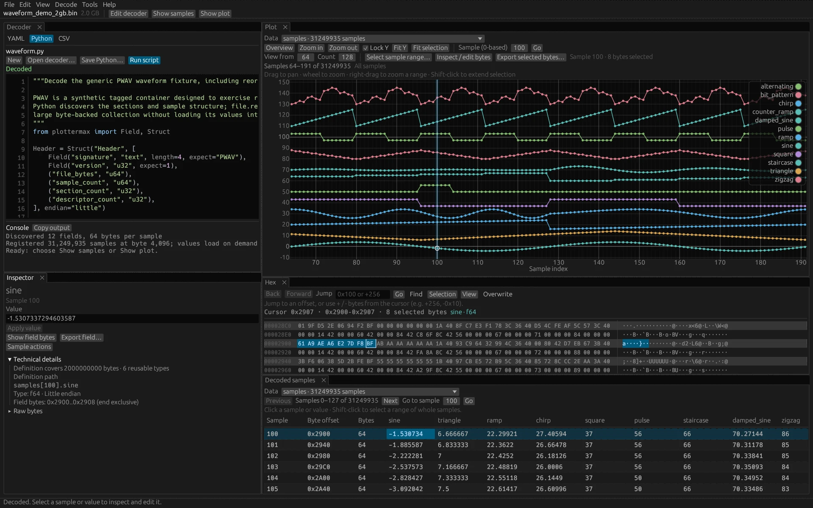
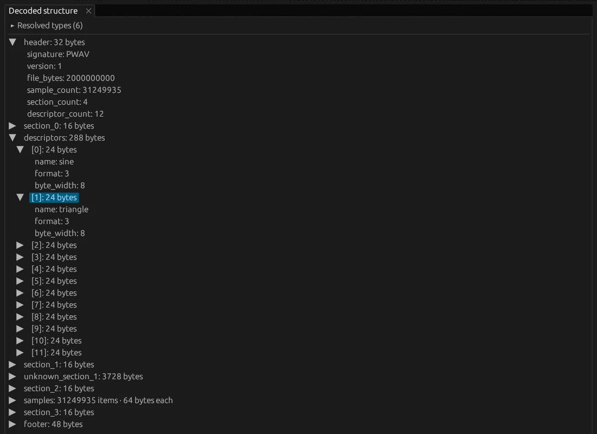
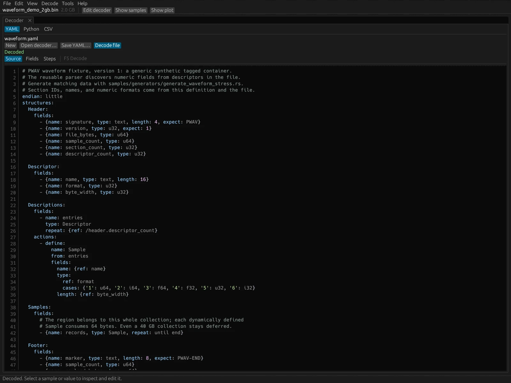
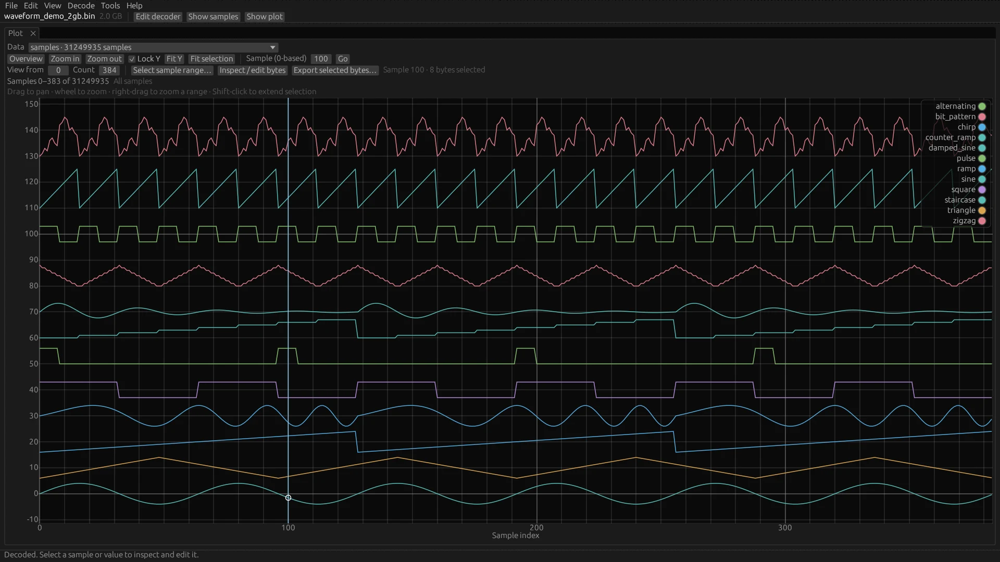
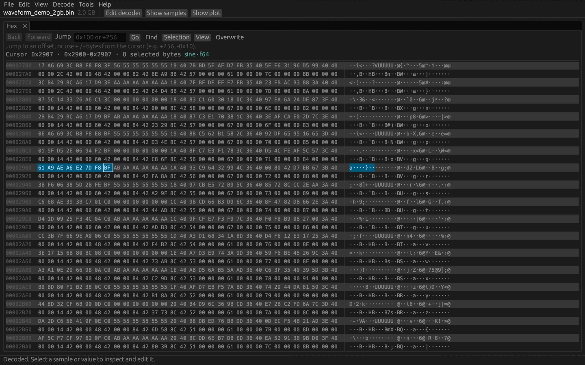
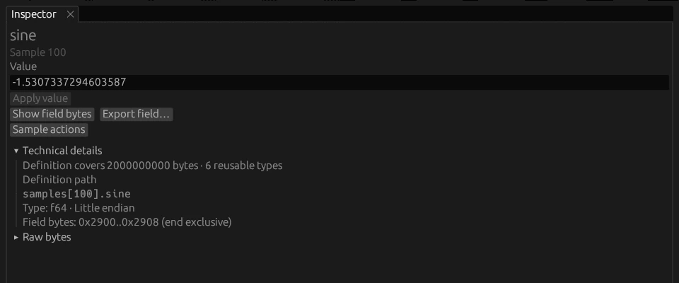

BinWave
See inside any file.
Open binary captures, CSV logs, or any file as bytes. Describe the format in YAML or Python, then plot, inspect, and edit the data, even in multi-gigabyte files.
- Native desktop app
- YAML or Python decoders
- CSV, binary, or any file
- Byte editing with undo / redo
Get BinWave on your own data.

1 2 3 4sample 100. Twelve channels, samples 64–191 of 31,249,935.sine cell = -1.530734, byte offset 0x2900.0x2900–0x2907, labeled sine · f64.-1.5307337294603587, ready to edit or export.One selection. Every view connected.
Explore the first 384 samples of the demo capture: 24,576 bytes loaded straight from waveform_demo_2gb.bin and decoded in your browser with the same 64-byte layout. Hover or tap the plot, or use the arrow keys, and watch the table row, hex bytes, and value follow. This is an explanatory walkthrough; open the app to work with your own files.
Open the live web app →- Path
- samples[100].sine
- Type
- f64 · Little endian
- Field bytes
- 0x2900..0x2908 (end exclusive)
Describe the format. Pick the language that fits it.
Both produce the same plot, table, and cross-probe, and neither one is a fallback for the other. Each keeps its own draft, and switching languages doesn't convert or run your code. F5 runs whichever is active.
endian: little structures: Descriptor: fields: - {name: name, type: text, length: 16} - {name: format, type: u32} - {name: byte_width, type: u32} Descriptions: fields: - name: entries type: Descriptor repeat: {ref: /header.descriptor_count} actions: - define: # build a type from the file name: Sample from: entries fields: name: {ref: name} type: ref: format cases: {'1': u64, '3': f64, '4': f32, '6': i32} length: {ref: byte_width} Section: fields: - {name: id, type: u32} - {name: payload_bytes, type: u64} - name: payload type: choose: ref: id cases: {'1': Descriptions, '2': Samples, '3': Footer} otherwise: bytes length: {ref: payload_bytes}
YAML: a declarative reader
- Structures describe fields and nested elements, and actions read them, skip or align bytes, calculate values, and choose interpretations.
- References like
/header.descriptor_countuse earlier decoded values for counts, lengths, and offsets. definebuilds a new record type from descriptions found in the file, andchoosepicks a type by tag.- Integers, floats, text, raw byte regions, and calculated values built from what you have already decoded.
from binwave import Field, Struct FORMATS = {1: "u64", 2: "i64", 3: "f64", 4: "f32", 5: "u32", 6: "i32"} def sample_type(descriptors): fields = [] for d in descriptors: fields.append(Field(d.name.rstrip("\0"), FORMATS[d.format], length=d.byte_width)) return Struct("Sample", fields, endian="little") header = file.read_struct("header", Header) assert header.file_bytes == file.size for index in range(header.section_count): section = file.read_struct(f"section_{index}", SectionHeader) end = file.tell() + section.payload_bytes if section.id == 1: descriptors = file.records("descriptors", Descriptor, count=header.descriptor_count) Sample = sample_type(descriptors) elif section.id == 2: # registers 31,249,935 records; nothing is read yet samples = file.records("samples", Sample, count=header.sample_count) file.seek(end)
Discovered 12 fields, 64 bytes per sample Registered 31,249,935 samples at byte 4,096; values load on demand Ready: choose Show samples or Show plot.
Python: ordinary code, lazy results
- Real Python. Imports, functions, loops, asserts, and your installed libraries, including a virtual environment of your choice.
file.read_struct()decodes metadata you can branch on.file.records()registers a typed collection for Plot, Table, and Hex without loading it.FieldandStructcoveru8–u64,i8–i64,f32,f64,text,bytes, nested structs, counts, offsets, per-field endianness, andexpect=checks.- Scripts see the working bytes, including unsaved hex edits. Edit a byte and the last successful decoder reruns. Stop cancels a runaway loop.
No schema yet? Start by selecting bytes.
The YAML editor has Source, Fields, and Steps tabs, and all three edit the same draft. You can build a decoder with forms instead of writing YAML by hand.
Select the bytes
Drag across a header in Hex and choose Describe selected bytes…, or New from selection in Fields.
Name and type them
Each field shows its size, position, and live value as you pick a format. A usage meter tracks how much of the selection is described.
Decode the selection
Decode selection opens the results right away. When the range holds whole records, Decode all N records in this selection appears.
Use what you decoded
Use this value for… turns a decoded number into a count, length, or offset. Build a type from these descriptions… turns a table of names into a struct.
Steps forms: Read data · Skip bytes · Align position · Calculate a value · Build type from descriptions · Choose by value
The decoder reads the layout out of the file.
Neither waveform decoder hardcodes a channel name or a sample offset. The file declares its own columns: twelve descriptors, each a name, a format code, and a byte width. The decoder turns them into a 64-byte Sample type, then walks length-prefixed sections by ID.
PWAV v1 · 2,000,000,000 bytes · 4 sections · 12 descriptorssine f64, triangle f64 … bit_pattern u320x1000Reverse the descriptor order, widen the unknown section, and move the payload from byte 4,096 to 8,192. The same script and the same YAML still decode it.

Decoded structure: an expandable tree of everything the decoder read, including the unknown section kept as raw bytes.

The YAML decoder with its Source, Fields, and Steps tabs. F5 decodes.

Plot: 12 channels, samples 0–383, cursor on sample 100. Toolbar: Overview · Zoom in · Zoom out · Lock Y · Fit Y · Fit selection · Select sample range… · Inspect / edit bytes · Export selected bytes…
Zoom from millions of samples to one.
Plot any numeric field across the whole collection, with many channels overlaid at once. Zoomed all the way out, peaks and dips stay visible instead of disappearing between pixels. Zoom in and every individual sample is there.
- Every point keeps its address. Click a peak at any zoom level and you get that sample's exact bytes.
- Overview shows the whole collection at a glance. Scan for all peaks reads every sample in the current range when you need to be sure nothing was missed.
- Drag to pan, wheel to zoom, right-drag to zoom to a range. Wheel over an axis to zoom only that axis. Lock Y holds the scale and Fit Y refits it.
- Select a sample range, then Inspect / edit bytes or Export selected bytes… to write exactly those interleaved records to a file.
A hex editor that knows the struct.
Hex scrolls smoothly through the whole file, however large, with no paging controls. Decoded fields tint their own byte ranges, and hovering any byte names the narrowest field that covers it.
- Jump to
0x100,256, or a relative+256/-0x10. Ctrl+G focuses it, and Back / Forward retrace your steps. - Find hex pairs or text anywhere in the file, then step through matches with Previous and Next.
- Overwrite mode takes hex pairs or UTF-8 text. Replace bytes… swaps a same-length range.
- Copy Python read copies a line like
file.read_at(0x2900, 8)for the selection. Name / color range… bookmarks bytes without any YAML. - Inspector shows the selection as integers and floats in both byte orders, as text, and the first byte's bits. Fixed-width numbers can be edited in place with Apply value.

Hex: the selection 0x2900–0x2907 is identified as sine · f64 and highlighted in both the hex and text columns.

Inspector: value, definition path, type, and exact field bytes, with Apply value, Show field bytes, and Export field…
Edit bytes with full undo.
Overwrite bytes in Hex or change a value in Inspector. Changed bytes stay marked, Undo / Redo steps through your edits, and the decoded views re-run against the edited bytes. Save edited copy… streams the result to disk, and Extract selection… streams just the bytes you selected.
Built for captures bigger than your RAM.
Hex, tables, and plots read only the part of the file you're looking at, so a capture opens and responds like a small one.
Timings vary with hardware and disk cache.
CSV that links back to bytes.
Open a CSV and the first portion plots right away, with no scan to EOF. Table cells and plotted points select their exact raw bytes, quoted and multiline fields included. Index entire file when you want exact totals, and the index resumes when you reopen.
Open anything as bytes.
.bin, .png, .zip, or no extension at all. Hex is usable immediately, and a file opens with a Byte preview plot. Example decoders for PNG chunks and RIFF/WAVE containers are included.
Dock it how you work.
Drag panel titles to split, stack, or float the Decoder, Plot, Hex, Decoded samples, Decoded structure, and Inspector. Your layout persists. Closing a panel keeps its selection and history, and every open and save dialog remembers its own folder.
Send me the format you're stuck on.
BinWave is built by a working embedded engineer who got tired of writing the same struct.unpack loop for every project. Email a line or two about your data: the log format, the chip, the protocol, and how big the captures get. Early testers shape what ships next.
Not available yet
- Compressed or computed data as plotted collections
- Bitfield and UTF-16 field types
- Inserting or removing bytes
- Checksum verification and repair
- Browser version
Python decoders run with your user permissions. YAML definitions can't run code.